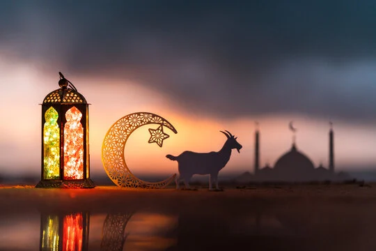

Eid, an Arabic word translating to "festival" or "feast," serves as the collective name for the two most significant religious observances in the Islamic calendar, both deeply rooted in devotion, gratitude, and communal solidarity. The first celebration, Eid al-Fitr (the "Festival of Breaking the Fast"), marks the triumphant conclusion of Ramadan, a holy month characterized by intense spiritual reflection, self-discipline, and dawn-to-dusk fasting. The second, Eid al-Adha (the "Festival of the Sacrifice"), occurs approximately two months later during the final month of the lunar calendar, honoring the profound obedience of Prophet Ibrahim (Abraham) and coinciding with the culmination of the annual Hajj pilgrimage to Mecca. Both of these sacred holidays begin at the break of dawn with a mandatory communal prayer (Salat al-Eid) held in sprawling outdoor grounds or grand mosques, immediately preceded by an obligatory act of charity (Zakat) designed to ensure that less fortunate members of society can fully participate in the festivities. Beyond the formal religious rites, Eid is a vibrant social affair where Muslims dress in their finest new clothes, adorn their homes, and exchange the universal greeting of peace and blessing, "Eid Mubarak." The days are filled with joyful family reunions, the sharing of elaborate traditional feasts, and the widespread practice of Eidi, a custom where elders gift money or presents to children, creating a powerful sense of unity, generational bonding, and shared joy across the global Muslim community.